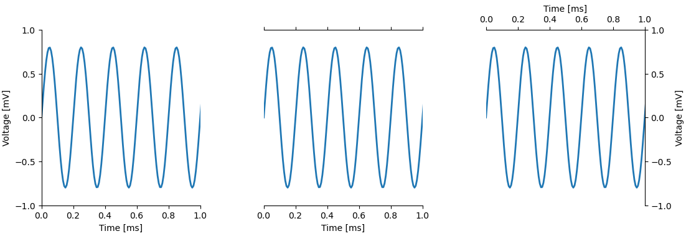
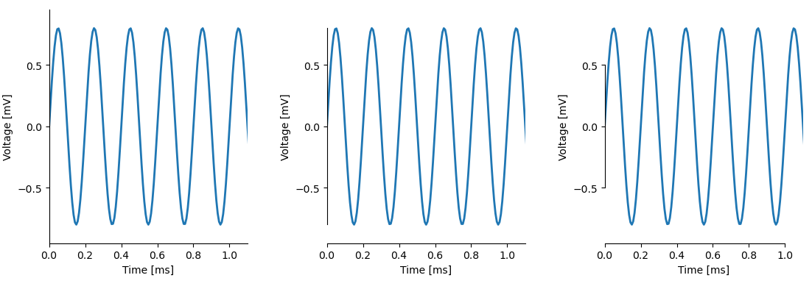
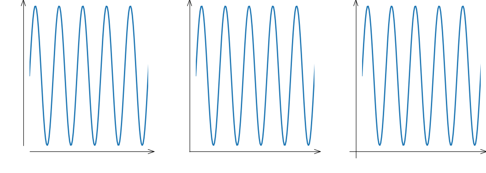

Module plottools.spines
Modify the appearance of spines.
Axes member functions
show_spines(): show and hide spines and corresponding tick marks.set_spines_outward(): set the specified spines outward.set_spines_zero(): set the position of the specified spines to the data value of the other axis.set_spines_bounds(): set bounds for the specified spines.arrow_spines(): spines with arrows.
Figure member functions
Same functions as the ones for the Axes. Functions are called on all figure axes.
show_spines(): show and hide spines and corresponding tick marks.set_spines_outward(): set the specified spines outward.set_spines_zero(): set the position of the specified spines to the data value of the other axis.set_spines_bounds(): set bounds for the specified spines.arrow_spines(): spines with arrows.
Settings
spines_params(): set default spine appearance.
matplotlib.rcParams defined by the spines module:
axes.spines.show : 'lrtb'
axes.spines.offsets: {'lrtb': 0}
axes.spines.positions: {'lrtb': None}
axes.spines.bounds : {'lrtb': 'full'}
axes.spines.arrows: '',
axes.spines.arrows.flushx: 0.0
axes.spines.arrows.flushy: 0.0
axes.spines.arrows.extendx: 1.0
axes.spines.arrows.extendy: 1.0
axes.spines.arrows.height: 10.0
axes.spines.arrows.ratio: 0.7
axes.spines.arrows.overhang: 1.0
axes.spines.twinx: 'r'
axes.spines.twiny: 't'
axes.spines.inset.show : 'lrtb'
axes.spines.inset.offsets: {'lrtb': 0}
axes.spines.inset.positions: {'lrtb': None}
axes.spines.inset.bounds : {'lrtb': 'full'}
Install/uninstall spines functions
You usually do not need to call these functions. Upon loading the spines
module, install_spines() is called automatically.
install_spines(): install functions of the spines module in matplotlib.uninstall_spines(): uninstall all code of the spines module from matplotlib.
Functions
def show_spines(ax, spines='lrtb')-
Show and hide spines.
Parameters
ax:matplotlib figure, matplotlib axis,orlistofmatplotlib axes- Axis on which spine and ticks visibility is manipulated. If figure, then apply manipulations on all axes of the figure. If list of axes, apply manipulations on each of the given axes.
spines:string- Specify which spines and ticks should be shown. All other ones or hidden. 'l' is the left spine, 'r' the right spine, 't' the top one and 'b' the bottom one. E.g. 'lb' shows the left and bottom spine, and hides the top and and right spines, as well as their tick marks and labels. '' shows no spines at all. 'lrtb' shows all spines and tick marks.
Examples
import matplotlib.pyplot as plt import plottools.spines fig, (ax0, ax1, ax2) = plt.subplots(1, 3) ax0.show_spines('lb') ax1.show_spines('bt') ax2.show_spines('tr')
def set_spines_outward(ax, spines, offset=0)-
Set the specified spines outward.
Parameters
ax:matplotlib figure, matplotlib axis,orlistofmatplotlib axes- Axis on which spines are set outwards. If figure, then apply manipulations on all axes of the figure. If list of axes, apply manipulations on each of the given axes.
spines:stringordictionary-
- string: specify to which spines the offset given by
the
offsetargument should be applied. 'l' is the left spine, 'r' the right spine, 't' the top one and 'b' the bottom one. E.g. 'lb' applies the offset to the left and bottom spine. - dictionary: apply offsets to several sets of spines individually. Dictionary keys are strings specifying the spines as described above. The corresponding values specify the offset by which the spines are moved outwards.
- string: specify to which spines the offset given by
the
offset:floatorNone- Move the specified spines outward by that many pixels. If None. leave the position of the spines untouched.
Examples
import matplotlib.pyplot as plt import plottools.spines fig, (ax0, ax1, ax2) = plt.subplots(1, 3) ax0.set_spines_outward('lb', 0) # set left and bottom spine outwards by 10 pixels: ax1.set_spines_outward('lb', 10) # set left and bottom spine inwards by 10 pixels: ax2.set_spines_outward('lb', -10)
# set the left and right spines outwards by 10 pixels and the top and bottom ones by 5: ax0.set_spines_outward({'lr': 10, 'bt': 5}) # set the bottom spine of all axis of the figure outward by 5 pixels: fig.set_spines_outward('b', 5) def set_spines_zero(ax, spines, pos=0)-
Set the position of the specified spines to the data value of the other axis.
Parameters
ax:matplotlib figure, matplotlib axis,orlistofmatplotlib axes- Axis on which the spine position is set. If figure, then apply manipulations on all axes of the figure. If list of axes, apply manipulations on each of the given axes.
spines:stringordictionary-
- string: specify which spines should be set. 'l' is the left spine, 'r' the right spine, 't' the top one and 'b' the bottom one. E.g. 'lb' applies the position to the left and bottom spine.
- dictionary: apply spine position to several sets of spines individually. Dictionary keys are strings specifying the spines as described above. The corresponding values specify the position of the spines.
pos:floatorNone- Position of the spine in data values of the other axis. If None, leave spine position untouched.
Examples
# set left and right spine to the origin of the data coordinates: ax.set_spines_zero('lr') # set the left spine to the origin of the x-axis, and the bottom spine # at -1 on the y-axis: ax.set_spines_zero({'l': 0, 'b': -1}) # set the left and the right spine of all axis of the figure to the origin: fig.set_spines_zero('lb') def set_spines_bounds(ax, spines, bounds='full')-
Set bounds for the specified spines.
Parameters
ax:matplotlib figure, matplotlib axis,orlistofmatplotlib axes- Axis on which spine bounds are set. If figure, then apply manipulations on all axes of the figure. If list of axes, apply manipulations on each of the given axes.
spines:stringordictionary-
- string: specify to which spines the bound setttings given by
the
boundsargument should be applied. 'l' is the left spine, 'r' the right spine, 't' the top one and 'b' the bottom one. E.g. 'lb' applies the bounds settings to the left and bottom spine. - dictionary: apply bound settings for several sets of spines.
Dictionary keys are strings specifying the spines as described above.
The corresponding values specify the bound settings
(see
boundsbelow for possible values and their effects).
- string: specify to which spines the bound setttings given by
the
bounds:'full', 'data', 'ticks'orfloatortuple thereof-
- 'full': draw the spine in its full length (default)
- 'data': do not draw the spine beyond the data range, uses matplotlib's smart_bounds
- 'ticks': draw the spine only within the first and last major tick mark.
- tuple: two values of 'full', 'data', 'ticks' or float specifying the lower and upper bound separately.
Raises
Valueerror
If an invalid
boundsargument was specified.Examples
import matplotlib.pyplot as plt import plottools.spines fig, (ax0, ax1, ax2) = plt.subplots(1, 3) ax0.set_spines_bounds('lb', 'full') ax1.set_spines_bounds('lb', 'data') ax2.set_spines_bounds('lb', 'ticks')
def arrow_spines(ax, spines, flush=None, extend=None, height=None, ratio=None, overhang=None, lw=None, color=None)-
Spines with arrows.
Parameters
ax:matplotlib figure, matplotlib axis,orlistofmatplotlib axes- Axis on which spine and ticks visibility is manipulated. If figure, then apply manipulations on all axes of the figure. If list of axes, apply manipulations on each of the given axes.
spines:string- Specify which spines should be shown as arrows. 'l' is the left spine, 'r' the right spine, 't' the top one and 'b' the bottom one.
flush:floatorNone- Extend the tail of the arrow. If the other axis is set
outward, then extend the tail by this factor times the outward
set distance of the spine of the other axis. That is, if
flushis set to 1.0, the tail of the arrow just touches the other spine. If the other axis is set to a specific data coordinate, then extend the tail byflushtimes the height of the arrow. IfNoneset torcParams['axes.spines.arrows.flushx']for horizontal spines orrcParams['axes.spines.arrows.flushy']for vertical spines. extend:floatorNone- Extend the length of the spine by this factor times the height
of the arrow.
If
Noneset torcParams['axes.spines.arrows.extendx']for horizontal spines orrcParams['axes.spines.arrows.extendy']for vertical spines. height:float- Height (length) of the arrow in points.
If
Noneset torcParams['axes.spines.arrows.height']. ratio:float- Width of arrow is
heighttimesratio. IfNoneset torcParams['axes.spines.arrows.ratio']. overhang:float- Fraction that the arrow is swept back: 0 is triangular arrow,
1 is pure line arrow, negative values extend the arrow backwards.
If
Noneset torcParams['axes.spines.arrows.overhang']. lw:floatorNone- Line width of spine. If
Noneset torcParams['axes.linewidth']. color:matplotlib color specificaionorNone- Color of spine. If
Noneset torcParams['axes.edgecolor'].
Examples
import matplotlib.pyplot as plt from plottools.spines import spines_params fig, (ax0, ax1, ax2) = plt.subplots(1, 3) spines_params(spines='', height=10) ax0.arrow_spines('lb') ax1.arrow_spines('lb', flush=1.0) ax2.arrow_spines('lb', flush=2.0)
def spines_params(spines=None, spines_offsets=None, spines_positions=None, spines_bounds=None, arrows=None, flushx=None, extendx=None, flushy=None, extendy=None, height=None, ratio=None, overhang=None, twinx_spines=None, twiny_spines=None, inset_spines=None, inset_spines_offsets=None, inset_spines_positions=None, inset_spines_bounds=None, color=None, linewidth=None)-
Set default spine appearance.
Only parameters that are not
Noneare updated.Call this function before you create a matplotlib figure.
Parameters
spines:string- Spines to be shown. Sets rcParams
axes.spines.show. Seespines.show_spines()for details. spines_offsets:dictorfloat- Offsets for moving spines outward. Sets rcParams
axes.spines.offsets. Seespines.set_spines_outward()for details. spines_positions:dictorfloat- Positions for spines in data coordinates.
Sets rcParams
axes.spines.positions. Seespines.set_spines_zero()for details. spines_bounds:dict- Bounds for the spines. Sets rcParams
axes.spines.bounds. Seespines.set_spines_bounds()for details. arrows:string- Spines as arrows. Sets rcParams
axes.spines.arrows. Seespines.arrow_spines()for details. flushx:float- Extend tail of arrowed top or bottom spine by this factor times
offset of other axis
(if set outwards) or by this factor times the height of the arrow
(if set to a data coordinate).
Sets rcParams
axes.spines.arrows.flushx. Seespines.arrow_spines()for details. extendx:float- Extend head of arrowed top or bottom spine by this factor times
height of arrow.
Sets rcParams
axes.spines.arrows.extendx. Seespines.arrow_spines()for details. flushy:float- Extend tail of arrowed left or right spine by this factor times
offset of other axis
(if set outwards) or by this factor times the height of the arrow
(if set to a data coordinate).
Sets rcParams
axes.spines.arrows.flushy. Seespines.arrow_spines()for details. extendy:float- Extend head of arrowed left or right spine by this factor times
height of arrow.
Sets rcParams
axes.spines.arrows.extendy. Seespines.arrow_spines()for details. height:float- Height of arrow head of arrowed spine in points.
Sets rcParams
axes.spines.arrows.height. Seespines.arrow_spines()for details. ratio:float- Width relative to height of arrow head of arrowed spine in points.
Sets rcParams
axes.spines.arrows.ratio. Seespines.arrow_spines()for details. overhang:float- Fraction that the arrow is swept back: 0 is triangular arrow,
1 is pure line arrow, negative values extend the arrow backwards.
Sets rcParams
axes.spines.arrows.overhang. Seespines.arrow_spines()for details. twinx_spines:string- Spines to be shown for
twinx()axes. Sets rcParamsaxes.spines.twinx. Seespines.show_spines()for details. Twinned axes get the same default offsets, positions, and bounds as the defaults for normal axes. twiny_spines:string- Spines to be shown for
twiny()axes. Sets rcParamsaxes.spines.twiny. Seespines.show_spines()for details. Twinned axes get the same default offsets, positions, and bounds as the defaults for normal axes. inset_spines:string- Spines to be shown for an inset.
Sets rcParams
axes.spines.inset.show. Seespines.show_spines()for details. inset_spines_offsets:dict- Offsets for moving spines outward for an inset.
Sets rcParams
axes.spines.inset.offsets. Seespines.set_spines_outward()for details. inset_spines_positions:dict- Positions of spines in data coordinates for an inset.
Sets rcParams
axes.spines.inset.positions. Seespines.set_spines_zero()for details. inset_spines_bounds:dict- Bounds for the spines of an inset.
Sets rcParams
axes.spines.inset.bounds. Seespines.set_spines_bounds()for details. color:matplotlib color- Color of spines. Sets rcParam
axes.edgecolor. linewidth:float- Width of spines. Sets rcParam
axes.linewidth.
def install_spines()-
Install functions of the spines module in matplotlib.
Patches the matplotlib functions
show()andsavefig()for fixing spine bounds before finishing the figure.Also patches the matplotlib axes constructor, the
twinx(),twiny(), and theplottools.insetsfunctions.Adds
matplotlib.rcParams:axes.spines.show : 'lrtb' axes.spines.offsets: {'lrtb': 0} axes.spines.positions: {'lrtb': None} axes.spines.bounds : {'lrtb': 'full'} axes.spines.arrows: '', axes.spines.arrows.flushx: 0.0 axes.spines.arrows.flushy: 0.0 axes.spines.arrows.extendx: 1.0 axes.spines.arrows.extendy: 1.0 axes.spines.arrows.height: 10.0 axes.spines.arrows.ratio: 0.7 axes.spines.arrows.overhang: 1.0 axes.spines.twinx: 'r' axes.spines.twiny: 't' axes.spines.inset.show : 'lrtb' axes.spines.inset.offsets: {'lrtb': 0} axes.spines.inset.positions: {'lrtb': None} axes.spines.inset.bounds : {'lrtb': 'full'}This function is called automatically upon importing the module.
See Also
def uninstall_spines()def demo_basic()-
Run a basic demonstration of the spine module.
def demo_arrows()-
Run a demonstration of the spine module showing arrowed spines.
def demo_twin_inset()-
Run a demonstration of the spine module showing twin behavior.
def demo()